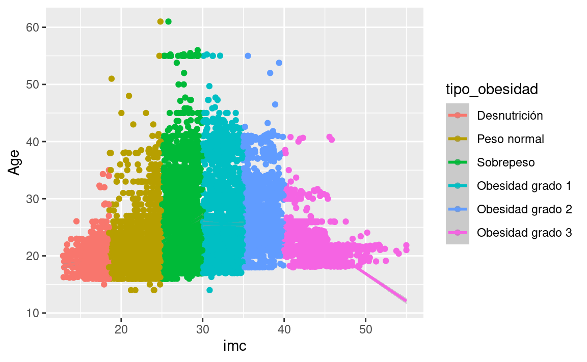
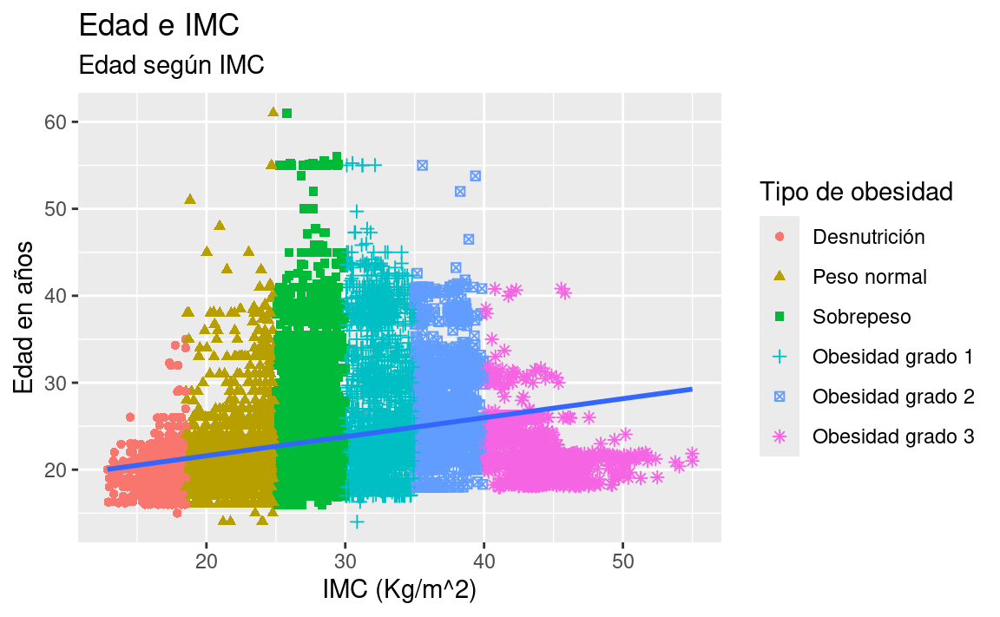
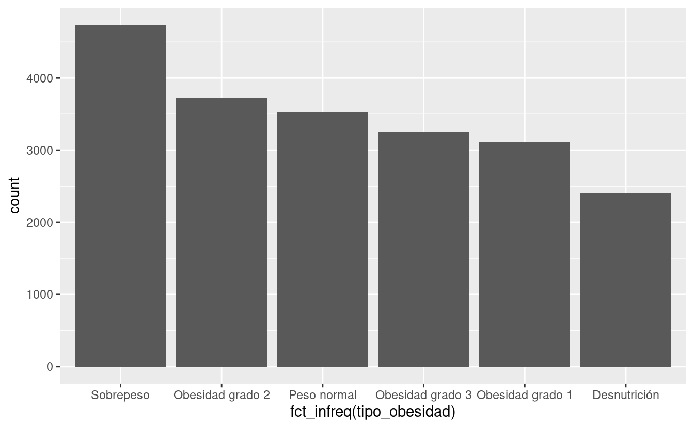
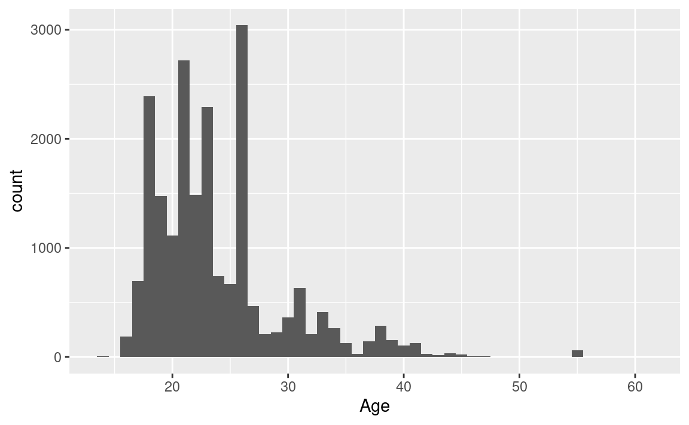
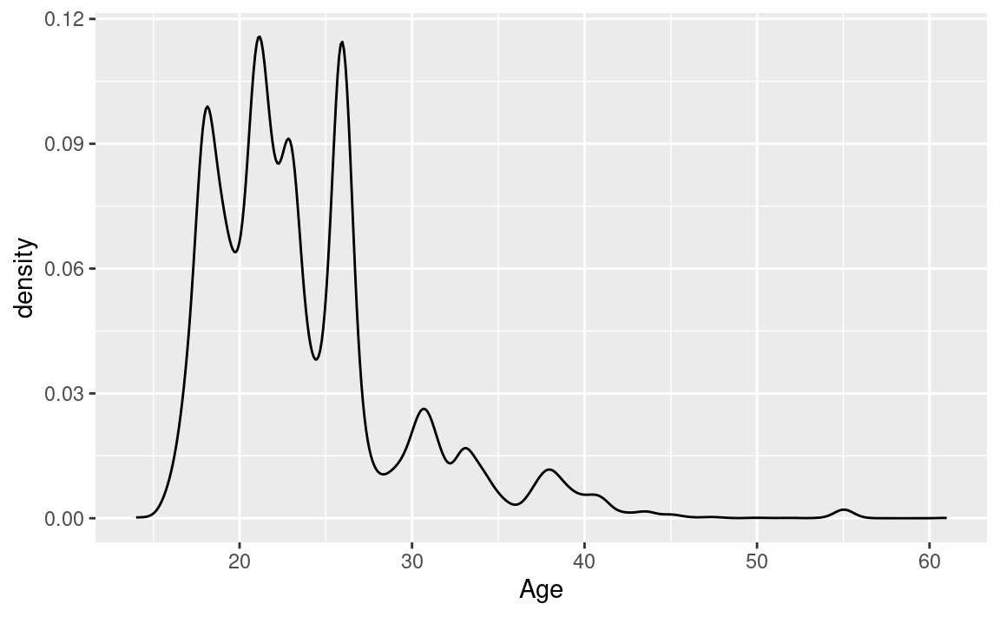
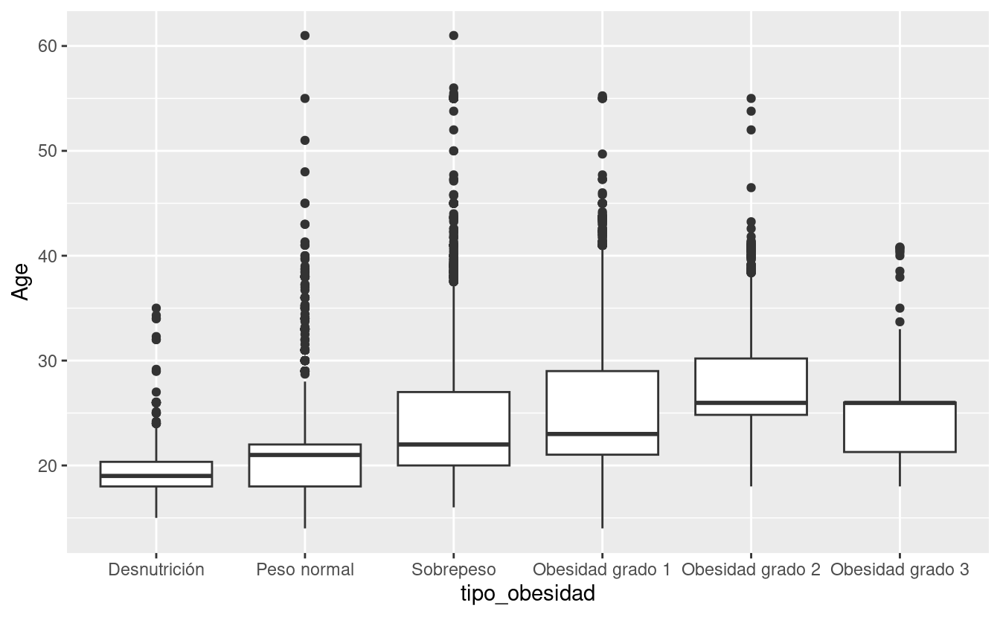
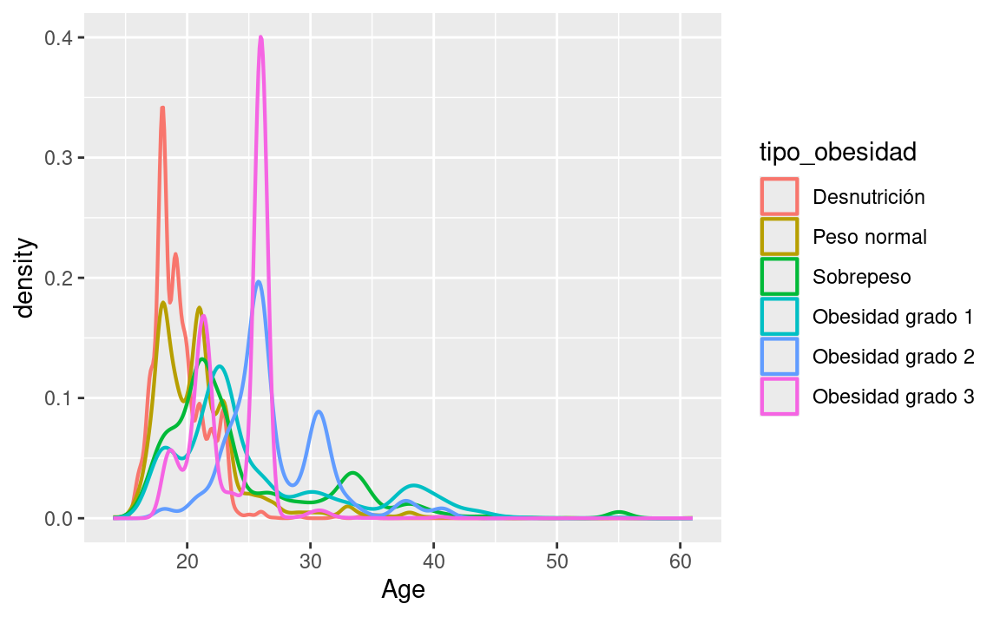
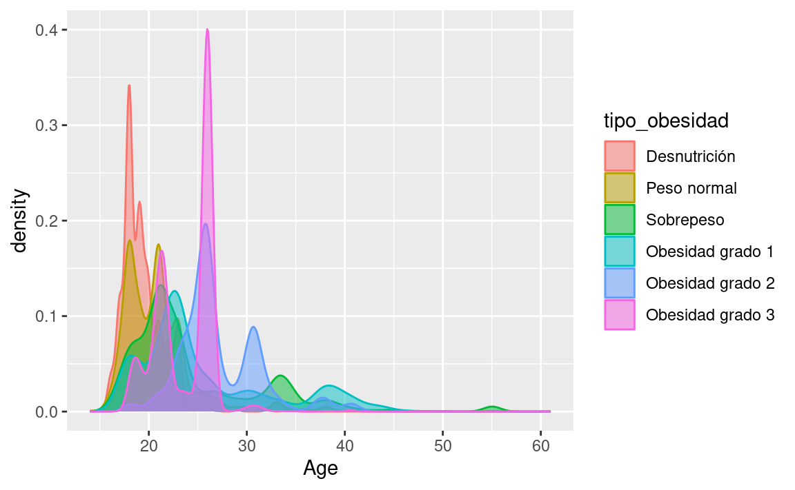
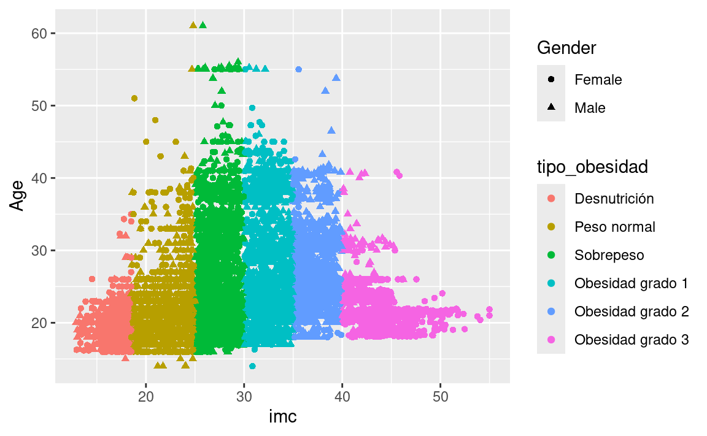
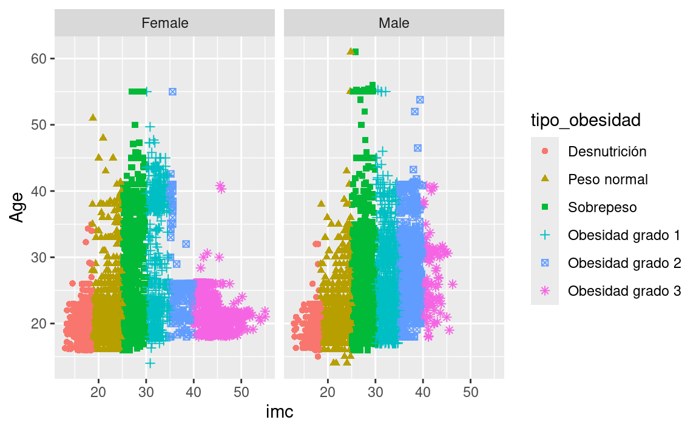

Prueba 3
Diagrama de dispersión
Diagrama de dispersión qué relaciona el imc con la edad tomando en cuenta el tipo de obesidad
Diagrama de dispersión con etiquetas
Diagrama de dispersión qué relaciona el imc con la edad tomando en cuenta el tipo de obesidad; también tiene etiquetas

Gráfico de barras
Gráfico de barras para tipo de obesidad

Histograma
Histograma de edad

Gráfico de densidad
Gráfico de densidad de edad

Diagrama de caja
Diagrama de caja de Edad y tipo de obesidad

Gráfico de densidad
Gráfico de densidad de Edad y tipo de obesidad

Gráfico de densidad con relleno y opacidad
Gráfico de densidad de Edad y tipo de obesidad con relleno y opacidad

Relacionar más de 3 variables
Relacionar género, Edad con imc y tipo de obesidad con un diagrama de dispersión

Facetas
Facetar por género las variables imc, Age y tipo de obesidad

Tablas sin formato
Tabla sin formato del obesity risk de kaggle mostrando 5 filas
# A tibble: 5 × 20
id Gender Age Height Weight family_history_with_…¹ frequent_high_calori…²
<dbl> <chr> <dbl> <dbl> <dbl> <fct> <fct>
1 0 Male 24.4 1.70 81.7 Si Si
2 1 Female 18 1.56 57 Si Si
3 2 Female 18 1.71 50.2 Si Si
4 3 Female 21.0 1.71 131. Si Si
5 4 Male 31.6 1.91 93.8 Si Si
# ℹ abbreviated names: ¹family_history_with_overweight,
# ²frequent_high_calorie_food
# ℹ 13 more variables: vegetable_consumption_frequency <dbl>,
# number_main_meals <dbl>, food_between_meals <fct>, SMOKE <fct>,
# daily_water_consumption <dbl>, caloric_beverages_consumption <fct>,
# physical_activity_frequency <dbl>, technology_use_time <dbl>,
# alcohol_consumption <fct>, transportation_mode <fct>, `0be1dad` <chr>, …Tablas con formato
Tabla con formato del obesity risk de kaggle mostrando 5 filas
| id | Gender | Age | Height | Weight | family_history_with_overweight | frequent_high_calorie_food | vegetable_consumption_frequency | number_main_meals | food_between_meals | SMOKE | daily_water_consumption | caloric_beverages_consumption | physical_activity_frequency | technology_use_time | alcohol_consumption | transportation_mode | 0be1dad | imc | tipo_obesidad |
|---|---|---|---|---|---|---|---|---|---|---|---|---|---|---|---|---|---|---|---|
| 0 | Male | 24.44301 | 1.699998 | 81.66995 | Si | Si | 2.000000 | 2.983297 | Sometimes | No | 2.763573 | No | 0.000000 | 0.976473 | Sometimes | Public_Transportation | Overweight_Level_II | 28.25956 | Sobrepeso |
| 1 | Female | 18.00000 | 1.560000 | 57.00000 | Si | Si | 2.000000 | 3.000000 | Frequently | No | 2.000000 | No | 1.000000 | 1.000000 | 0 | Automobile | 0rmal_Weight | 23.42209 | Peso normal |
| 2 | Female | 18.00000 | 1.711460 | 50.16575 | Si | Si | 1.880534 | 1.411685 | Sometimes | No | 1.910378 | No | 0.866045 | 1.673584 | 0 | Public_Transportation | Insufficient_Weight | 17.12671 | Desnutrición |
| 3 | Female | 20.95274 | 1.710730 | 131.27485 | Si | Si | 3.000000 | 3.000000 | Sometimes | No | 1.674061 | No | 1.467863 | 0.780199 | Sometimes | Public_Transportation | Obesity_Type_III | 44.85580 | Obesidad grado 3 |
| 4 | Male | 31.64108 | 1.914186 | 93.79806 | Si | Si | 2.679664 | 1.971472 | Sometimes | No | 1.979848 | No | 1.967973 | 0.931721 | Sometimes | Public_Transportation | Overweight_Level_II | 25.59915 | Sobrepeso |